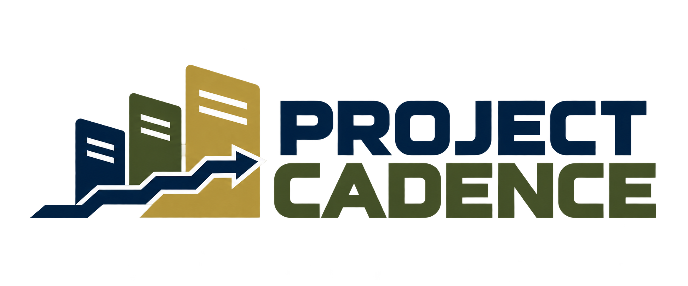

workflowPreview · Illustrative milestones, not a live course review
Course progress
Connecting to saved progress…
Right now
Waiting for dataLoading the latest milestone.
Course intake
Through ADDIE
Milestones show recorded work, not time remaining or institutional approval.
Phase documents and sections
A checkmark means the section is finished and has a saved supporting document. Approval is recorded separately.
Specialist work
No specialist assignments recorded yet.
Deliverables
Deliverables appear here when files are saved.